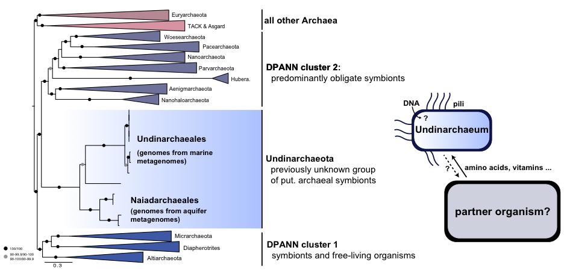
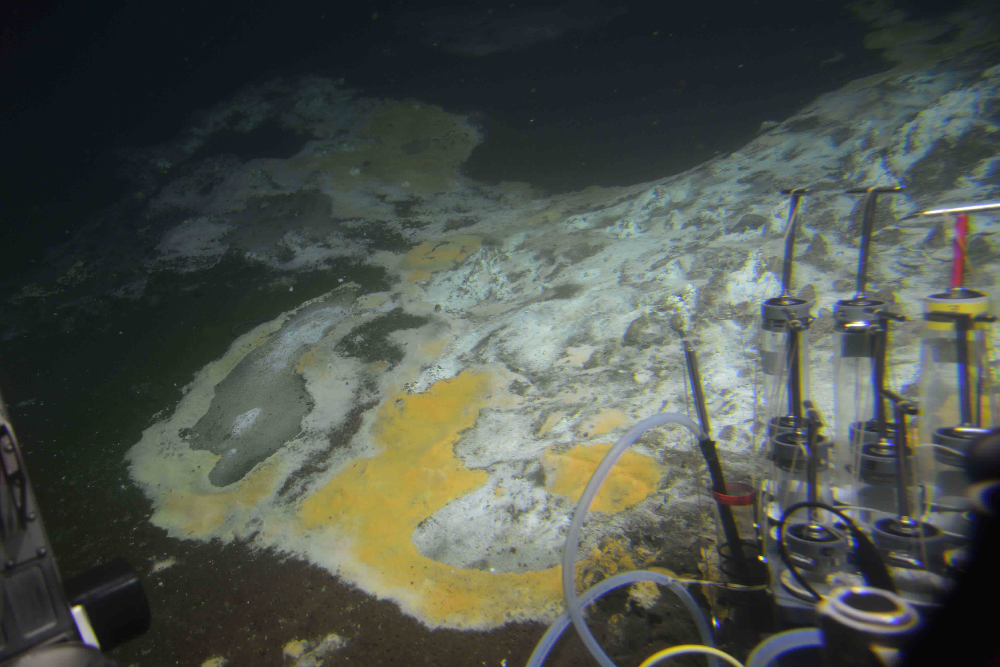
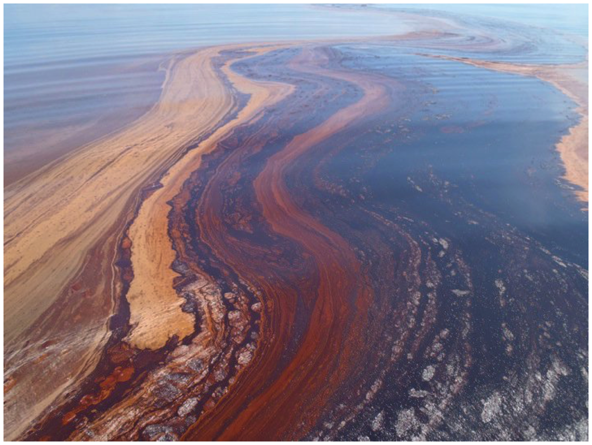
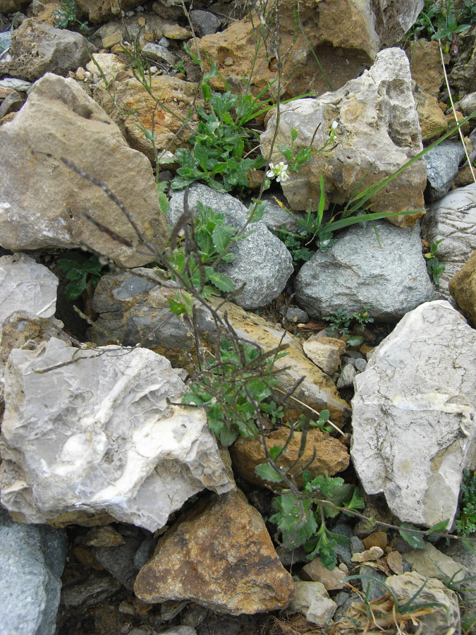
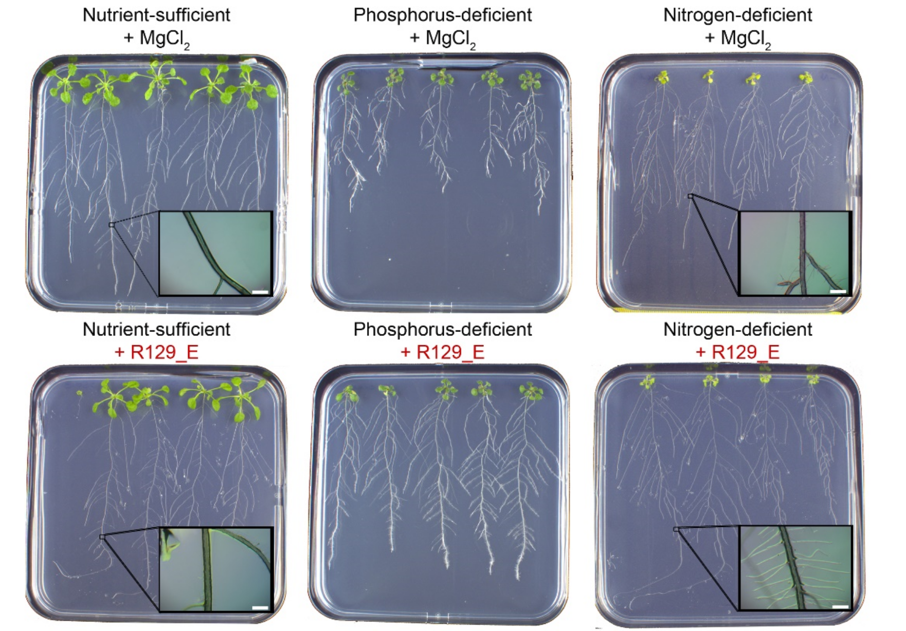

Projects
Current Postdoc
- I am interested in gaining insights into the biology and evolution of archaea belonging to the DPANN superphylum, a group of archaea recently discovered using metagenomic approaches. Specifically, I am interested in:
- Understanding how diverse DPANN archaea are in marine environments
- Trying to identify the interaction partners of DPANN archaea using metagenomic approaches?
- Finding the position of DPANN in the archaeal tree of life and addressing the question, whether symbiosis evolved early in the archaeal domain?

- I am also investigating the microbial diversity and nutrient dependencies of microbes in the Black Sea.
- The Black Sea is a stratified, anaerobic marine environment and as such provides extremely stable conditions. Using metagenomic approaches we want to compare microbial communities at different depths and
- Untangle the nutrient interdependencies of microbes in the water column and the sediment.
- Preliminary data suggests that DPANN archaea are extremely diverse and abundant in the Black Sea. Therefore, we will also use this as a study site to address some of the questions asked above.

Postdoc at the MSI
- During my Postdoc at the Marine Science Institute (University of Texas) I reconstructed microbial genomes and resolved metabolic capabilities of microbes found in hydrothermal sediment vent sediments. Here, was looking at:
- How diverse are microbial communities found in Guaymas Basin deep-sea hydrothermal vent sediments?
- What is the genetic, functional and metabolic potential encoded in bacteria genomes from these sediment communities?
- What pathways for anaerobic degradation of hydrocarbons are encoded in these genomes?
Read more:

- Additionally, I identified hydrocarbon degradation pathways in uncultured bacteria from the Deep Water Horizon Oil Spill and asked:
- What were the hydrocarbon degrading bacteria that were present during the Deepwater Horizon oil spill
- What pathways do these bacteria employ for oil-degradation?
- What features can we find in their genomes that allow them quickly to adapt to a high oil input?

Read more:
Previous Research
I did my doctoral Research (2012-2015) at the Department of Plant and Microbe Interactions in Max-Planck-Institute for Plant Breeding Research in Cologne, Germany. Here, I worked on two main research topics:
- Structural and functional analysis of the bacterial root microbiota of Arabidopsis thaliana and relative species with the aim to understand:
- What is the structure of bacterial communities found in natural soil, rhizosphere and plant roots of Arabis alpina, Arabidopsis thaliana and Cardamine hirsuta?
- What are factors (i.e. environment, soil type, flowering, …) that shape the assembly of bacterial communities?
Read more:
Quantitative divergence of the bacterial root microbiota in Arabidopsis thaliana relatives

- Investigate root-associated rhizobia and study their plant growth-promoting properties on Arabidopsis thaliana
- How diverse is the Rhizobia population found on roots of Arabidopsis thaliana?
- What is the role of root-associated Rhizobia on plant growth?
- How do Rhizobia affect the plant transcriptome?
Read more:
[Functional overlap of the Arabidopsis leaf and root microbiota]
I did my undergraduate Research (2010-2011) at the Department of Molecular Signal Processing in Leibniz Institute for Plant Biochemistry in Halle, Germany and wrote my thesis on Ribosomal mRNA profiling of auxin-inducible genes in Arabidopsis thaliana. Here, I:
- Established of translating ribosomal affinity purification (TRAP) as new experimental technique in order to isolate cell-type specific mRNA as well as development of new cell-type-specific maker lines
- Investigated of the effect of auxin application on the expression of marker genes in different root-cell types
